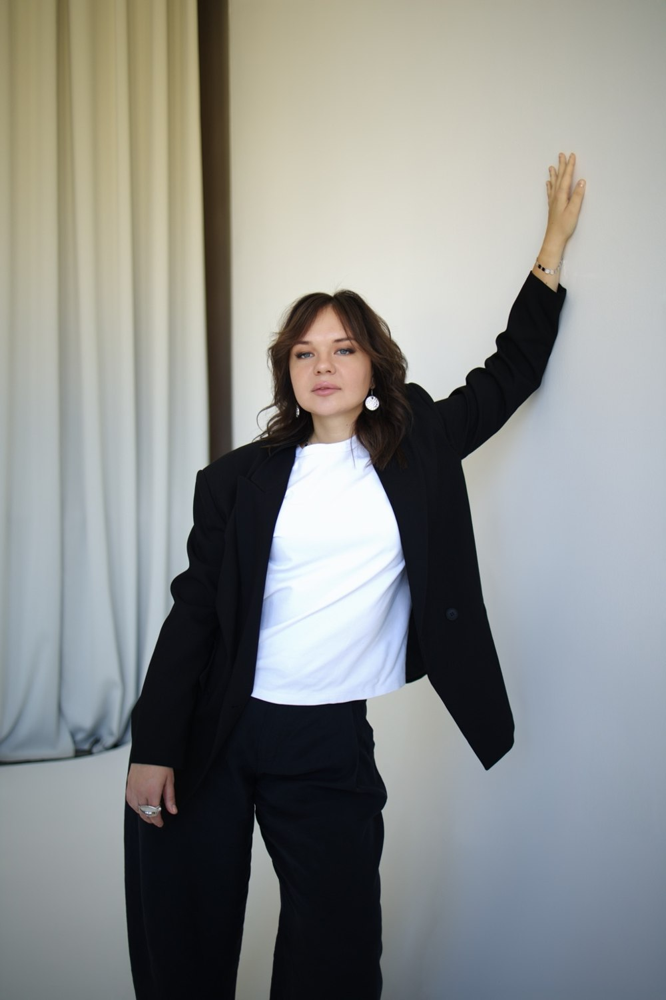

☼
Астрологія
Розумієш себе
та свій потенціал
АСТРОЛОГІЯ · ТАРО · ЛІЛА
Простір самопізнання, усвідомлених рішень та внутрішніх змін
ЗАПИСАТИСЯ НА КОНСУЛЬТАЦІЮ →
Розумієш себе
та свій потенціал
Відповіді на важливі
запитання
Глибинні усвідомлення
та зміни
ПРО МЕНЕ ✧
Допомагаю людям краще зрозуміти себе, знайти внутрішній баланс, приймати усвідомлені рішення та створювати життя, яке приносить радість.
Поєдную астрологію, Таро та гру ЛІЛА як інструменти самопізнання, щоб разом дослідити ваші запити та знайти нові погляди на ситуацію.
ЗВ’ЯЗАТИСЯ →ІНДИВІДУАЛЬНІ КОНСУЛЬТАЦІЇ
Комплексний аналіз натальної карти та прогностичних методик відповідно до вашого запиту.
ЩО ВХОДИТЬ:
Формат: Zoom + запис зустрічі
Важливо: Дата, точний час і місце народження.
Одне важливе питання — детальний персональний розбір без повного аналізу натальної карти.
ЩО ВХОДИТЬ:
Формат: Індивідуальна аудіовідповідь
Важливо: Дані народження та ваше конкретне запитання.
Чому в особистому житті повторюються одні й ті самі сценарії?
ЩО ВХОДИТЬ:
Формат: Онлайн-консультація або аудіорозбір
Важливо: Дата, час і місце народження.
Астрологічний аналіз взаємодії двох людей.
ЩО ВХОДИТЬ:
Формат: Zoom + запис зустрічі
Важливо: Дата, точний час і місце народження обох партнерів.
Де ваші гроші та як реалізувати власні здібності?
ЩО ВХОДИТЬ:
Формат: Онлайн-консультація або аудіорозбір
Важливо: Дата, час і місце народження.
Для тих, хто шукає свою справу або хоче змінити професійний напрямок.
ЩО ВХОДИТЬ:
Формат: Zoom + запис зустрічі
Важливо: Дата, час і місце народження.
Індивідуальний астрологічний рік від дня народження до наступного дня народження.
ЩО ВХОДИТЬ:
Формат: Zoom + запис зустрічі
Важливо: Дата, точний час і місце народження.
Персональний астрологічний прогноз на обраний період.
ЩО ВХОДИТЬ:
Формат: Індивідуальний аудіозапис
Важливо: Дата, час і місце народження; бажаний період.
Астрологічний розбір натальної карти дитини для батьків.
ЩО ВХОДИТЬ:
Формат: Zoom + запис зустрічі
Важливо: Дата, точний час і місце народження дитини.
Астрологічне уточнення часу народження за важливими подіями життя.
ЩО ВХОДИТЬ:
Формат: Індивідуальний розрахунок + PDF
Важливо: Результат є астрологічною оцінкою, а не документальним підтвердженням. Остаточна вартість залежить від складності.
ІНДИВІДУАЛЬНІ КОНСУЛЬТАЦІЇ
Індивідуальний розклад на ваш запит із трактуванням карт та рекомендаціями.
ЩО ВХОДИТЬ:
Формат: Онлайн-консультація або аудіорозбір
Важливо: Ваше запитання або опис ситуації.
ІНДИВІДУАЛЬНІ КОНСУЛЬТАЦІЇ
Трансформаційна гра, у якій через особистий запит досліджуємо переконання, обмеження та життєві сценарії.
ЩО ВХОДИТЬ:
Формат: Індивідуальна або групова гра, онлайн / офлайн
Важливо: Ціна залежить від формату та кількості учасників.
Кожна консультація створюється під ваш запит
Делікатна та конфіденційна розмова
Нові погляди на важливі питання
Практичні рекомендації для наступних кроків
Напишіть, яка послуга вас цікавить, і ми узгодимо деталі, формат та зручний час.